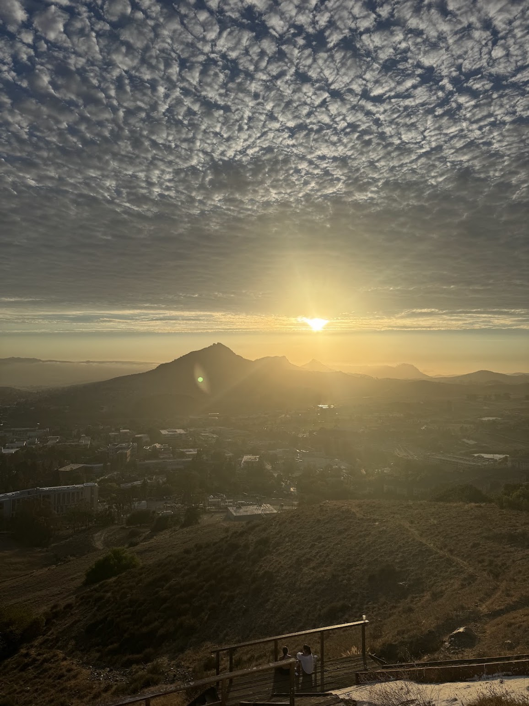

Hello World! 🔥

Hey! I'm Aidan, an aspiring software engineer! I love to build things and act creatively in any way I can. I've always been very interested in multi-modal arts and making my ideas come to life. I'm a big jack of all trades person, and love to pick up new skills and learn new things.
I'm also very big on my obligations as a moral engineer and am adamantaly against working in unethical settings or on unethical projects. I want to ultimately create a positive impact on the world around me, and more specifically in my local community if possible.